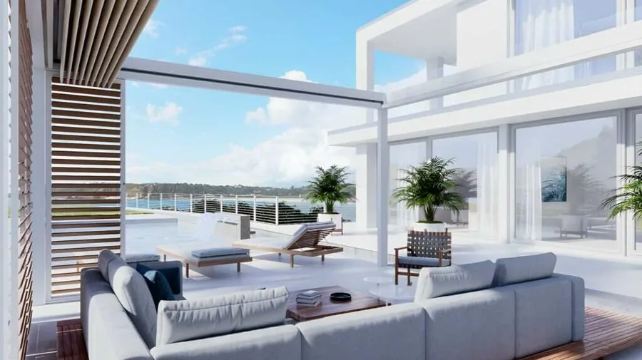

Unsere Modelle
Faltdach OpenAir – unsere Lösungen
Alle Produkte werden maßgefertigt und direkt bei Ihnen montiert.

Faltdach OpenAir
Jedes Modul hat sein eigenes Dach mit Doppelschicht-Gewebe und automatischer Steuerung. Das patentierte Wasserableitungssystem verhindert Spritzwasser beim Schließen. Modularer Aufbau – ideal wenn es größer werden soll. Mit optionaler ZIP-Seitenmarkise, Heizstrahler und Beleuchtung.
- Zwei Varianten: freistehend oder wandmontiert
- Windbeständig bis 120 km/h
- Modular kombinierbar für beliebige Größen
- Patentiertes Wasserableitungssystem
- Automatische Steuerung je Modul
- Optional: ZIP-Seitenmarkise, Heizstrahler, LED
- Ideal für Gastronomie und große Terrassen
Faltdach OpenAir – der mobile Wetterschutz für Gewerbe und Gastronomie
Das Faltdach OpenAir ist eine einzigartige Lösung für alle, die Außenflächen flexibel nutzen möchten: bei gutem Wetter offen und einladend, bei Regen sofort geschlossen und trocken. Das patentierte Wasserableitungssystem sorgt dafür, dass kein Wasser auf der Dachfläche steht – auch bei starkem Regen läuft das Wasser direkt und geräuschlos ab.
Das System ist modular aufgebaut und lässt sich auf nahezu jede Breite und Tiefe anpassen. Typische Anwendungen sind Gastronomiebetriebe, Vereinsheime, Eventlocations oder auch private Terrassen, die eine außergewöhnliche Lösung suchen. Die Aluminiumkonstruktion ist robust, wartungsarm und langlebig – auch in den windreichen Lagen des Westerwaldes.
Planung und Montage im Westerwald und Rhein-Lahn-Kreis
BV AussenSysteme plant und montiert das Faltdach OpenAir für Gewerbebetriebe und Privatpersonen in der Region Montabaur, Neuwied, Altenkirchen und Koblenz. Wir übernehmen das Aufmaß vor Ort, erstellen ein maßgeschneidertes Angebot und kümmern uns um die fachgerechte Montage. Das System ist genehmigungsfrei bis zu den jeweiligen Landesgrenzen – unser Baugenehmigung-Checker gibt Ihnen vorab Auskunft.
Kontaktieren Sie uns für eine kostenlose Beratung – wir zeigen Ihnen, wie das Faltdach OpenAir Ihre Außenfläche das ganze Jahr über nutzbar macht.
Kostenlos beraten lassen
Wir kommen zu Ihnen – im Westerwald und Umgebung. Unverbindlich, vor Ort, auf Ihre Situation zugeschnitten.
Jetzt Termin anfragen